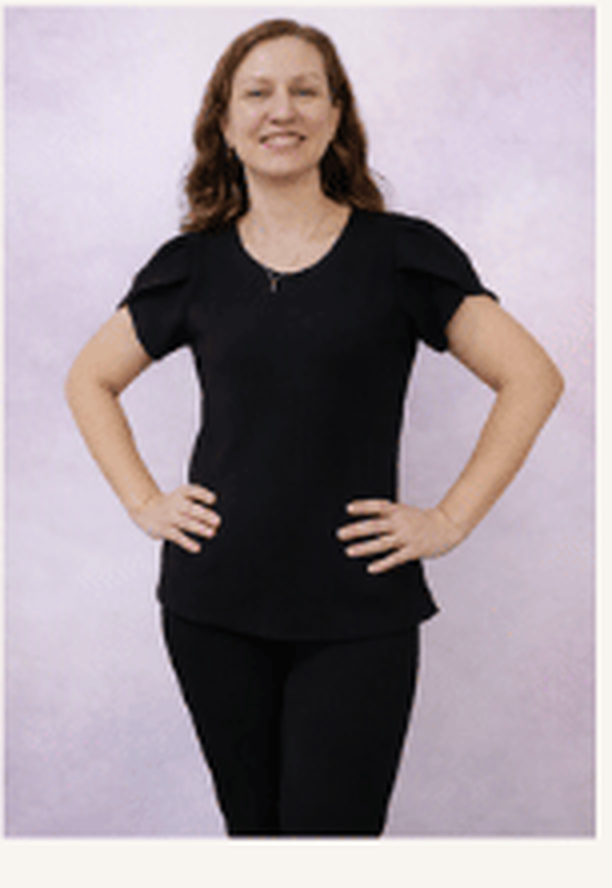

Diana Nogueira
Psicóloga Clínica · CRP 06/234614
Encontre novas possibilidades para além da dor e construa uma vida guiada pelos seus valores.
Atendimento psicológico online para adultos e idosos. Através de uma abordagem focada em abrir caminhos para viver o momento presente, com abertura às experiências e alinhamento aos valores pessoais.
Sobre mim

Me chamo Diana Nogueira Marcos de Souza (CRP 06/234614), sou psicóloga clínica dedicada a oferecer um espaço de acolhimento seguro, ético e livre de julgamentos. Atendo adultos e idosos exclusivamente online, proporcionando o conforto e a flexibilidade necessários para priorizar e cuidar da saúde mental.
Minha prática é voltada para o atendimento individual, pautada por uma escuta qualificada e pela construção de uma aliança terapêutica sólida. O meu objetivo clínico é caminhar ao seu lado a partir do momento presente e de uma conexão autêntica, oferecendo suporte técnico e humano para tentar auxiliar no desenvolvimento da flexibilidade psicológica e no compromisso com ações alinhadas aos seus valores.
Minha abordagem clínica
Minha atuação clínica é fundamentada na Psicoterapia Comportamental Contextual. Isso significa que busco olhar para os seus desafios considerando toda a sua história de vida e a realidade atual em que você está inserido. O processo terapêutico é construído com base em pilares práticos que visam auxiliar no seu desenvolvimento.
- Aceitação ativa: olhar para a forma como você se relaciona com pensamentos e sentimentos difíceis, em vez de lutar contra eles, abrindo espaço para dores que não podem ser mudadas.
- Clareza no momento presente: trazer a atenção para o aqui e agora, permitindo a tentativa de ações práticas que estejam alinhadas aos seus próprios valores.
- Conexão segura: utilizar o espaço da nossa sessão, a partir de um vínculo autêntico e sem julgamentos, como uma oportunidade viva de aprendizagem.
- Novos repertórios: colaborar para que você note seus padrões do dia a dia, auxiliando no seu autoconhecimento e nas suas relações interpessoais.
Para que serve a psicoterapia?
Cuidar da saúde mental permite que você encontre novas formas de lidar com os momentos de crise e compreenda melhor o seu funcionamento diante dos altos e baixos da vida.
- Flexibilidade diante da dor: desenvolver recursos práticos para vivenciar os desafios cotidianos de forma mais leve, sem deixar que o sofrimento paralise os seus dias.
- Protagonismo e escolhas: fortalecer a sua autonomia diária, auxiliando para que as suas decisões e atitudes passem a ser baseadas no que realmente traz sentido para a sua história.
- Construção de repertório: abrir espaço para a tentativa e a aprendizagem de comportamentos mais saudáveis, gerando impactos positivos no seu bem-estar e na sua realidade.
Benefícios do atendimento online
Cuidar da saúde mental através do formato online oferece praticidade para o seu dia a dia, permitindo que o processo aconteça com total profundidade, dedicação técnica e segurança.
- Conforto e privacidade: possibilidade de realizar o acompanhamento a partir de um espaço de sua escolha, facilitando a abertura emocional e o bem-estar durante as sessões.
- Otimização de tempo: eliminação da necessidade de deslocamento ou trânsito, tornando mais simples a tarefa de conciliar o autocuidado com as demandas da sua rotina.
- Sem barreiras geográficas: flexibilidade para manter a constância nos atendimentos mesmo em períodos de viagens, mudanças ou rotinas fora de casa.
Dê o primeiro passo hoje
Se você busca um espaço seguro e colaborativo para olhar para a sua história, convido você a iniciar o processo terapêutico. Agende uma consulta online e comece a investir em ações orientadas pelos seus valores.
Diana Nogueira
Psicóloga Clínica · CRP 06/234614